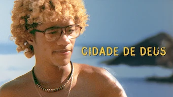

Cidade de Deus

2002 - 2h 09min HD
16 Anos -Violência, conteúdo sexual e drogas
História:
A Cidade de Deus, também chamada pela abreviatura CDD pelos moradores,
é um bairro da Zona Oeste do Rio. Originariamente, deveria ser um conjunto
habitacional. Fazia parte de um planejamento do governo do Estado
da Guanabara que, na década de 1960, buscava um modelo para
o Programa Habitacional
Elenco: Alexandre Rodrigues, Firmino, Outros
Diretores: Fernando Meirelles, Kátia Lund
Diretor: Jeremy Saulnier
Autor: Paulo Lins
Data de lançamento: 30 de agosto de 2002 (Brasil)
Produtoras: O2 Filmes, Globo Filmes, VideoFilmes, Hank Levine Film, StudioCanal, Wild Bunch, Lumiere Productions, Lereby
Gênero: Drama
© 1996 - 2024. Todos direitos reservados a Comunicação e Participações S.A.